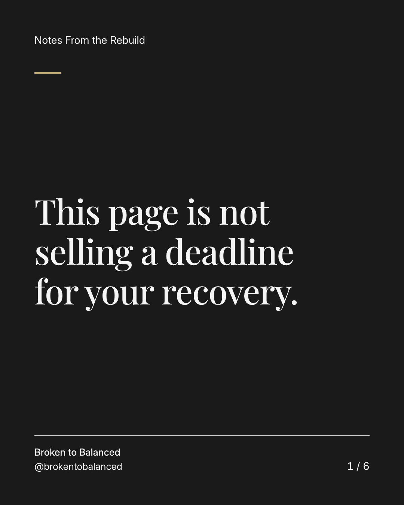
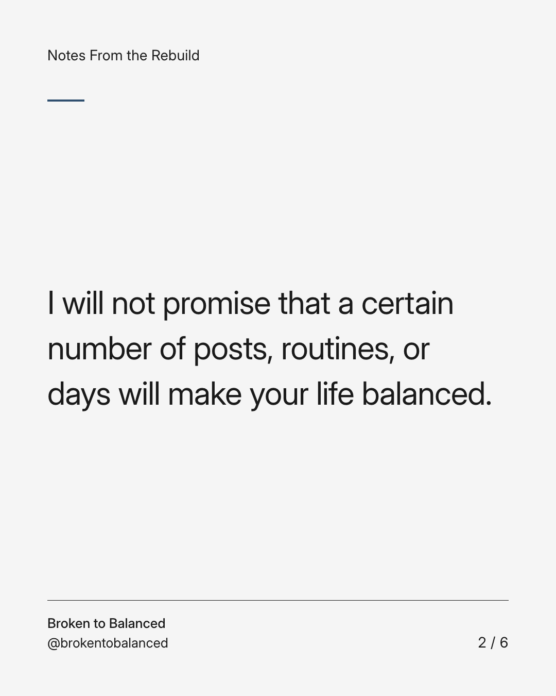
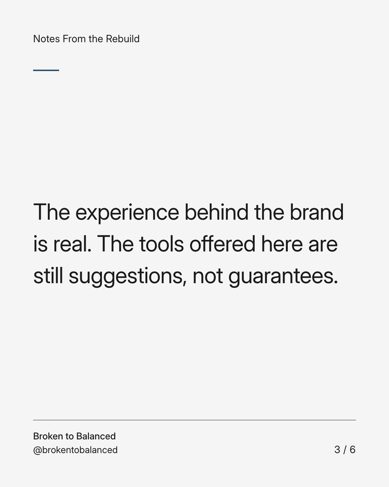
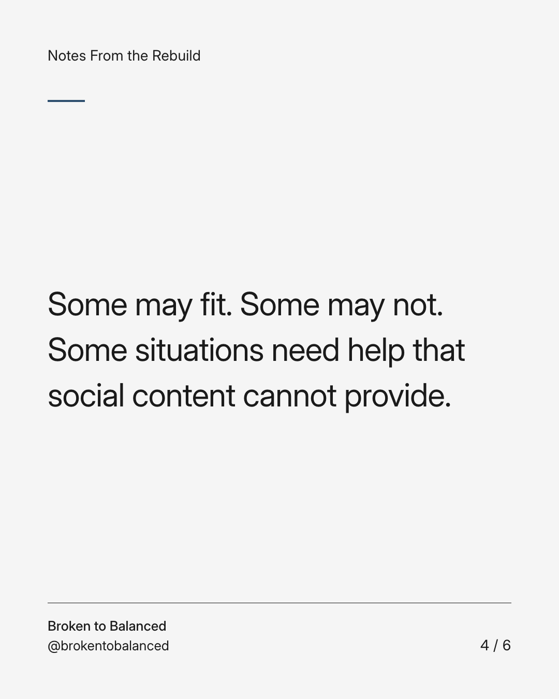
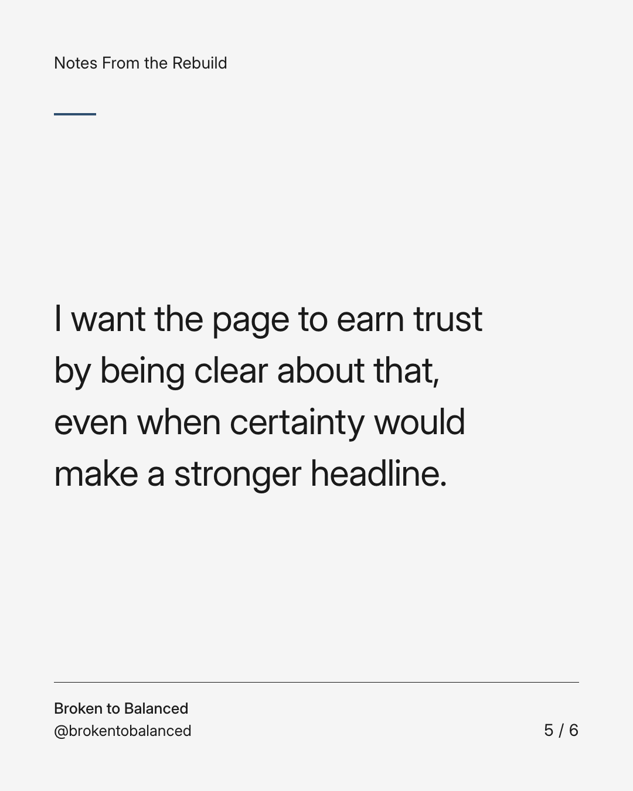
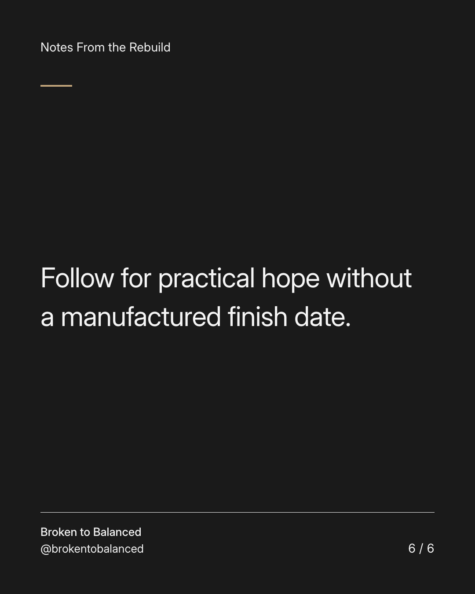

Exact text and accessibility text
This page is not selling a deadline for your recovery.
Slide 1 of 6. This page is not selling a deadline for your recovery.


Exact text and accessibility text
I will not promise that a certain number of posts, routines, or days will make your life balanced.
Slide 2 of 6. I will not promise that a certain number of posts, routines, or days will make your life balanced.


Exact text and accessibility text
The experience behind the brand is real. The tools offered here are still suggestions, not guarantees.
Slide 3 of 6. The experience behind the brand is real. The tools offered here are still suggestions, not guarantees.


Exact text and accessibility text
Some may fit. Some may not. Some situations need help that social content cannot provide.
Slide 4 of 6. Some may fit. Some may not. Some situations need help that social content cannot provide.


Exact text and accessibility text
I want the page to earn trust by being clear about that, even when certainty would make a stronger headline.
Slide 5 of 6. I want the page to earn trust by being clear about that, even when certainty would make a stronger headline.


Exact text and accessibility text
Follow for practical hope without a manufactured finish date.
Slide 6 of 6. Follow for practical hope without a manufactured finish date.
Exact caption
Plain-text fallback: select and copy the caption.